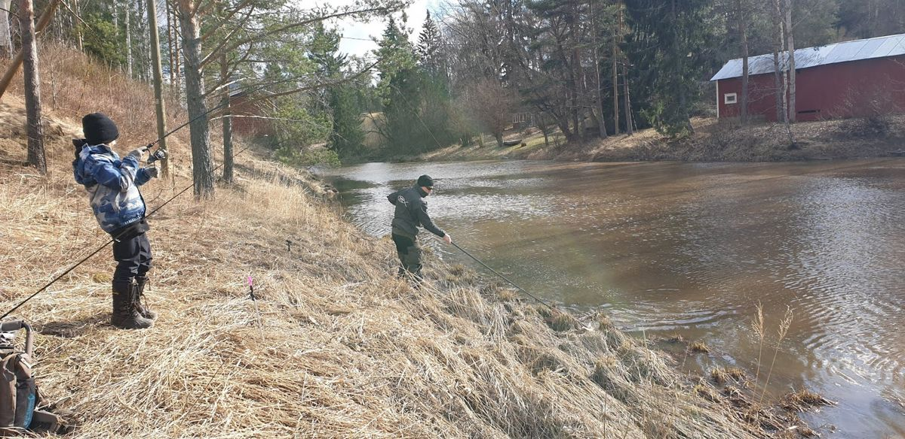
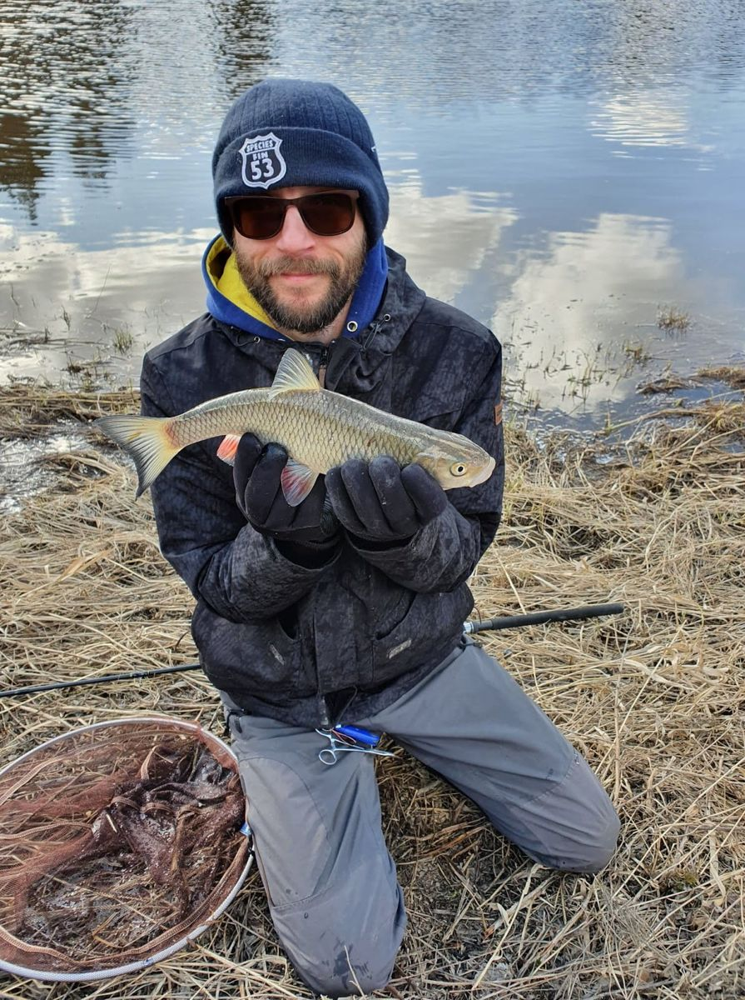

Blogitekstit · Maaliskuu 2020
Covid-19 evakossa Mustionjoella - Turpajahdissa hyvässä seurassa

Tänään piti olla soutelemassa Kymijoella Miikka Pulliaisen kanssa. Tavoitteena oli yrittää taimen -ja lohipistettä maaliskuun lopulle.
Perjantain ja lauantain välisenä yönä 28.3.2020 kirjoitetaan Suomen historiankirjoihin, tuolloin Uusimaa meni kiinni ja alueelle pääsy kiellettiin ja ulospääsy myös. Vain työ -ja rahtiliikenne sallittiin sekä muutamat poikkeustapaukset.
Uudenmaan rajojen sulkeuduttu peruuntui myös kauan odotettu ja suunniteltu kalareissu Kymille.


Mieli halasi kuitenkin kalalle, päätin ottaa suunnaksi Mustionjoen tutun suvannon ja sielä lyhyävät turvat sekä muut särkikalat. Lähi Alepasta nakkipaketti ja olut reppuun ja matkalle kohti Pornaista. Mukaan reissulle tuli myös Timi poikansa Ahdin kanssa ja aikaisemmin jo madereissulla joella mukana ollut Osku.
Näin "karanteeniaikaan" pidimme sopivan hajuraon toisistamme rupatellan mukavia odotellessa kilikellon kilahdusta. Ensimmäinen kilahdus tulikin juuri kun Timi oli laskeutumassa penkkaa alas. Haavimies paikalla ja kala sujahti haaviin. Turpa, lajipiste nro. 15 kuluvalle vuodelle.
Sen pituinen se.


Seuraa ennätyksen etenemistä
Pidän kirjaa lajilistasta ja tarkemmasta retkidatasta Google -taulukossa, joka löytyy jokaisesta ennätysyrityksen postauksesta. Tästä linkistä taulukko avautuu uuteen ikkunaan.
Seurantatilanne löytyy myös blogini oikeasta yläreunasta.
Vuoden aikana ennätysyrityksessä kulkee mukaan myös tämä kalataitelija-graaffikko Sakke Yrjölän suunnittelema SPECIES FIN 53 -merkki.
Paitakulmassa painatin pipoon ja lippikseen saman merkin. Tavoitteeni on saada aikaiseksi 53 saaliskuvaa tekstin alussa tekemääni taulukkoon joissa kaikissa kuvissa näkyisi tuo kyseinen tunnus.
Paitakulma on Suomalainen perheyritys, joka haluaa panostaa laatuun ja asiakastyytyväisyyteen. Tutustu yrityksen palveluihin tästä.
2020 Mustijoki Osku Jari Tapio Kuusela pohjaonki SpeciesFIN53 Timi Laitinen turpa